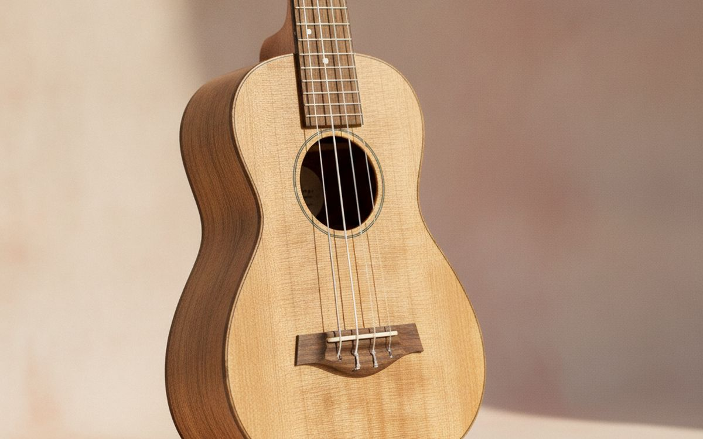
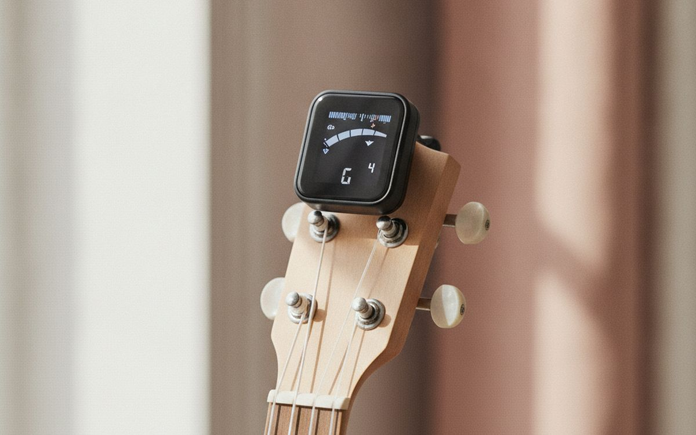
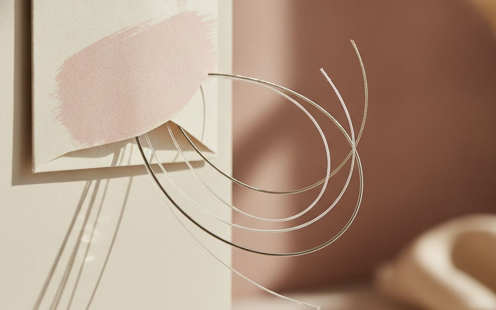
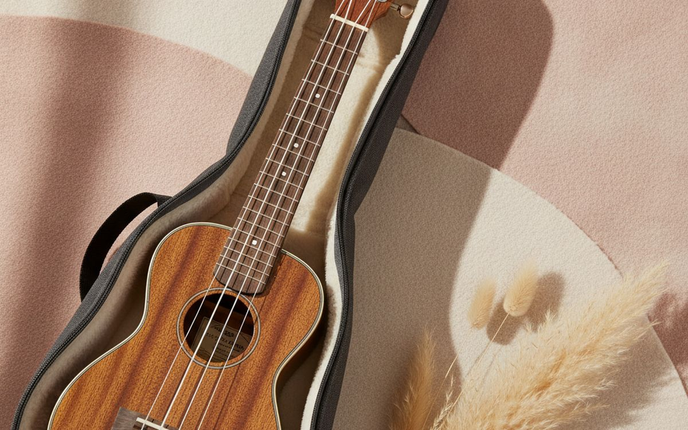
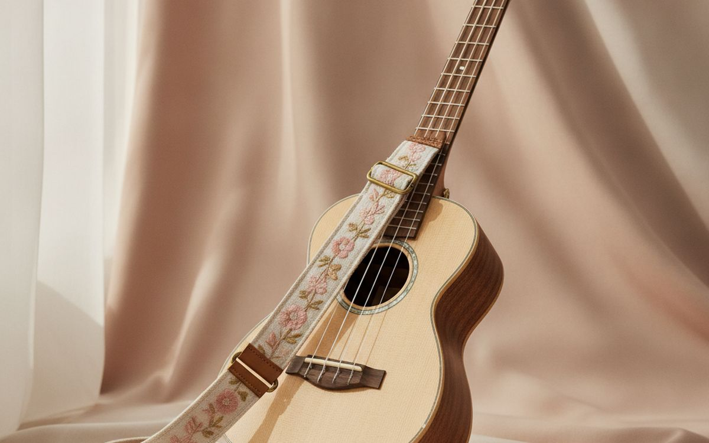
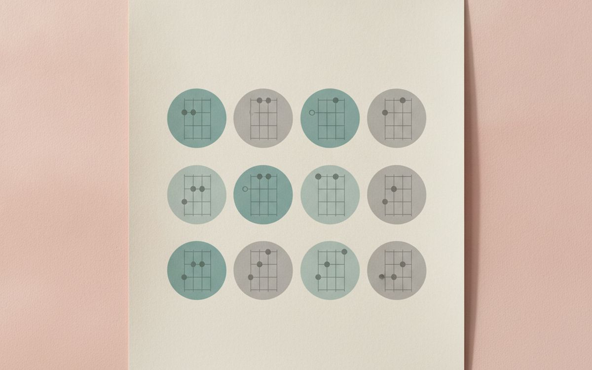
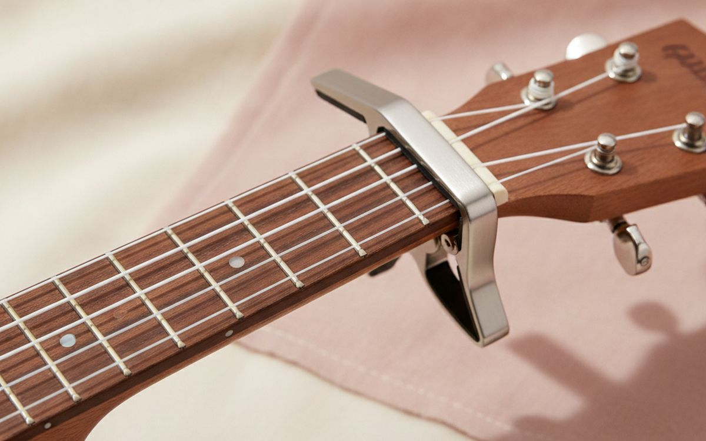
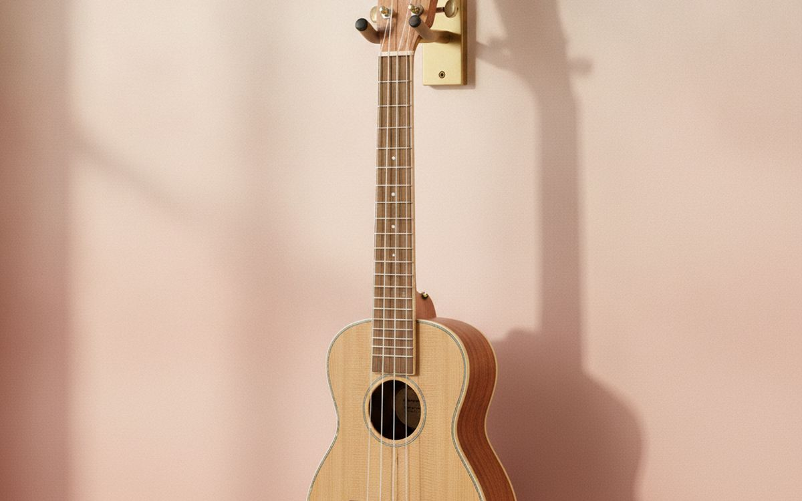
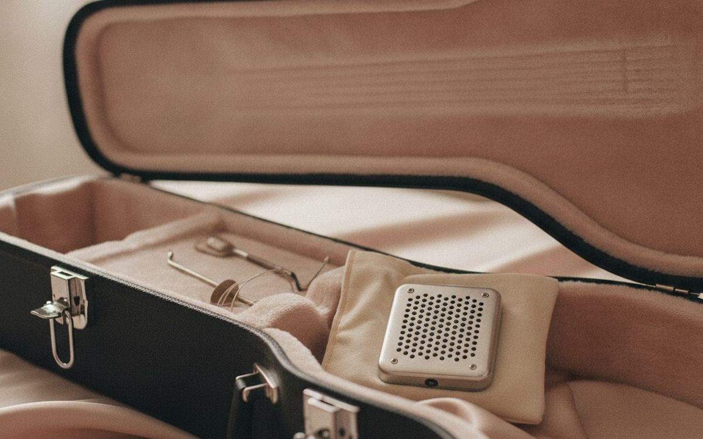
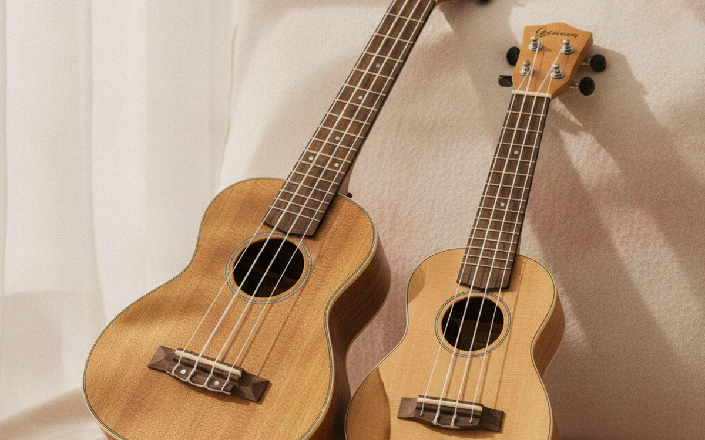

The ukulele is one of the easiest instruments to start. It has four nylon strings, small frets and simple chords, and many people play their first song in an afternoon. Most beginners who quit do so for one reason: a very cheap instrument that will not stay in tune and hurts to press. It sounds bad however well you play, and practice becomes a chore.
This list is ordered by what keeps you playing. A decent instrument and a tuner come first. After that are the inexpensive extras that make practice easier.
Prices below are approximate street prices at the time of writing and move around constantly, especially during sale events. Treat them as a rough band for budgeting, not a quote. Always check the live listing before you buy.
En bref
A concert-size ukulele from a known brand
The instrument to start on
Transparence. Les liens de cette page sont des liens affiliés. Si vous achetez via l’un d’eux, nous pouvons percevoir une commission sans surcoût pour vous. Cela n’influence ni le contenu de cette liste ni son ordre.
Comment nous avons choisi
These picks come from music teachers' advice, ukulele communities and long-run owner reports, cross-checked against current retail listings. We have not personally tested every item here. Instruments shipped long distances may need a setup; a local music shop can adjust string height cheaply.
En un coup d’œil
Les prix sont indicatifs au moment de la rédaction et changent souvent.
Notre sélection

01 · The instrument to start onA concert-size ukulele from a known brand
Soprano ukuleles are the classic size, but their frets are cramped for adult fingers. Concert size is slightly larger, easier to play and sounds fuller. Known beginner brands like Kala, Enya, Cordoba, Lanikai and Donner offer playable instruments that hold tune. Avoid the cheapest toy ukuleles; poor frets and tuning pegs make them nearly impossible to play in tune. A solid-top instrument sounds better, but a laminate one is tougher and fine to start. The case for it: comfortable size for adults, holds tune, and good sound for the price. The trade-off is real: laminate tops sound less rich and may need a setup for lower action, so weigh that against how often it would actually get used.
$60-120Le compromis: Laminate tops sound less rich
Pourquoi il est là
- Comfortable size for adults
- Holds tune
- Good sound for the price
Bon à savoir
- Laminate tops sound less rich
- May need a setup for lower action

02 · Staying in tuneA clip-on tuner
New strings stretch and go out of tune constantly for the first week or two. A clip-on tuner senses vibration, so it works in noisy rooms, and it makes tuning take seconds. Phone apps work, but a clip-on tuner is faster and always there. Many work for guitar too. The case for it: tune in seconds, works in noisy rooms, and cheap. The trade-off is real: needs a small battery and easy to leave switched on, so weigh that against how often it would actually get used. For $10-20, it is a small, low-risk addition to the list rather than a centrepiece purchase you need to think hard about.
$10-20Le compromis: Needs a small battery
Pourquoi il est là
- Tune in seconds
- Works in noisy rooms
- Cheap
Bon à savoir
- Needs a small battery
- Easy to leave switched on

03 · Better soundQuality replacement strings
Budget ukuleles often come with poor strings. Replacing them with good strings from Aquila, Martin or D'Addario is the cheapest way to improve sound and tuning stability. Make sure you buy the right size for your ukulele. Expect a few days of re-tuning as they stretch. The case for it: improves tone, better tuning stability, and cheap. The trade-off is real: new strings need a few days to settle and must match your ukulele size, so weigh that against how often it would actually get used. Priced around $8-12, it is easy to justify even if it only ends up getting occasional rather than daily use.
$8-12Le compromis: New strings need a few days to settle
Pourquoi il est là
- Improves tone
- Better tuning stability
- Cheap
Bon à savoir
- New strings need a few days to settle
- Must match your ukulele size

04 · Protecting the instrumentA padded gig bag
Ukuleles are light and easy to knock, and cracks are expensive. A padded gig bag protects it at home and on the go, and backpack straps make it easy to bring to lessons or trips. Look for at least 10mm padding. The case for it: protects from knocks, easy to carry, and pockets for accessories. The trade-off is real: less protection than a hard case and thin bags offer little, so weigh that against how often it would actually get used. At $20-40, it earns its place on this list without asking for a big up-front commitment either way.
$20-40Le compromis: Less protection than a hard case
Pourquoi il est là
- Protects from knocks
- Easy to carry
- Pockets for accessories
Bon à savoir
- Less protection than a hard case
- Thin bags offer little

05 · Playing standing upA strap
Ukuleles slip, especially standing up. A strap holds it in place so both hands are free to play. Many ukuleles lack strap buttons; clip-on straps that hook into the sound hole avoid drilling. The case for it: easier playing, frees your hands, and cheap. The trade-off is real: some need strap buttons installed and hook straps can mark the sound hole, so weigh that against how often it would actually get used. For $10-20, it is a small, low-risk addition to the list rather than a centrepiece purchase you need to think hard about.
$10-20Le compromis: Some need strap buttons installed
Pourquoi il est là
- Easier playing
- Frees your hands
- Cheap
Bon à savoir
- Some need strap buttons installed
- Hook straps can mark the sound hole

06 · Learning songsA chord chart or beginner book
Four chords, C, G, Am and F, play hundreds of songs. A chord chart on the wall or a beginner book with songs gives structure. Free video lessons are great too, but a book gives you a path to follow. The case for it: structure for practice, quick reference, and cheap. The trade-off is real: books cannot show strumming like video and check the book matches your tuning, so weigh that against how often it would actually get used. Priced around $10-20, it is easy to justify even if it only ends up getting occasional rather than daily use.
$10-20Le compromis: Books cannot show strumming like video
Pourquoi il est là
- Structure for practice
- Quick reference
- Cheap
Bon à savoir
- Books cannot show strumming like video
- Check the book matches your tuning

07 · Changing key easilyA capo
A capo clamps across the frets to change key, so you can play songs in a key that suits your voice without learning new chords. It is small, cheap and useful for singers. The case for it: change key easily, suits singers, and cheap. The trade-off is real: guitar capos may be too wide and can knock tuning slightly, so weigh that against how often it would actually get used. At $8-15, it earns its place on this list without asking for a big up-front commitment either way. As with anything on this list, check the exact listing details and current price before adding it to a cart.
$8-15Le compromis: Guitar capos may be too wide
Pourquoi il est là
- Change key easily
- Suits singers
- Cheap
Bon à savoir
- Guitar capos may be too wide
- Can knock tuning slightly

08 · Keeping it within reachA wall hanger
The instrument in a case under the bed does not get played. One hanging on the wall does. A wall hanger keeps it in sight and within reach, which leads to more short practice sessions. The case for it: encourages practice, looks good, and cheap. The trade-off is real: needs wall mounting and avoid walls near heaters, so weigh that against how often it would actually get used. For $10-15, it is a small, low-risk addition to the list rather than a centrepiece purchase you need to think hard about. It is a minor purchase in the context of the whole set-up, but the kind that is easy to regret skipping once you notice the gap.
$10-15Le compromis: Needs wall mounting
Pourquoi il est là
- Encourages practice
- Looks good
- Cheap
Bon à savoir
- Needs wall mounting
- Avoid walls near heaters

09 · Dry climatesA small humidifier pack
Wooden instruments crack in very dry air, especially with indoor heating in winter. A small humidifier pack in the case keeps humidity steady. More important for solid-wood instruments. The case for it: prevents cracks, cheap insurance, and easy to use. The trade-off is real: needs refreshing and less important for laminate, so weigh that against how often it would actually get used. Priced around $10-20, it is easy to justify even if it only ends up getting occasional rather than daily use. None of that makes it essential for everyone reading this, only worth knowing about if the description above matches how you actually use the space.
$10-20Le compromis: Needs refreshing
Pourquoi il est là
- Prevents cracks
- Cheap insurance
- Easy to use
Bon à savoir
- Needs refreshing
- Less important for laminate

10 · Bigger hands and fuller soundA tenor ukulele
Tenor ukuleles are larger still, with more fret space and a deeper sound. They suit people with large hands or guitar players. They are a common second instrument once you know you love it. The case for it: roomier frets, fuller sound, and great second ukulele. The trade-off is real: less of the classic ukulele sound and larger to carry, so weigh that against how often it would actually get used. At $100-200, it earns its place on this list without asking for a big up-front commitment either way. As with anything on this list, check the exact listing details and current price before adding it to a cart.
$100-200Le compromis: Less of the classic ukulele sound
Pourquoi il est là
- Roomier frets
- Fuller sound
- Great second ukulele
Bon à savoir
- Less of the classic ukulele sound
- Larger to carry
Questions fréquentes
What size ukulele should a beginner get?
Concert size suits most adults. Soprano is fine for children and small hands.
How long does it take to learn?
Many people play simple songs within a week of short daily practice.
Why does my ukulele keep going out of tune?
New strings stretch for the first week or two. Keep tuning; it will settle.
Is a cheap ukulele okay?
Very cheap toys are hard to play in tune. A known beginner brand is worth the extra.
Les offres du jour
Voyez ce qui est en promotion en ce moment.
Offres →← Tous les guides
En tant que affilié AliExpress, nous percevons une commission sur les achats éligibles. Les prix et la disponibilité sont exacts à la date de publication et peuvent changer.